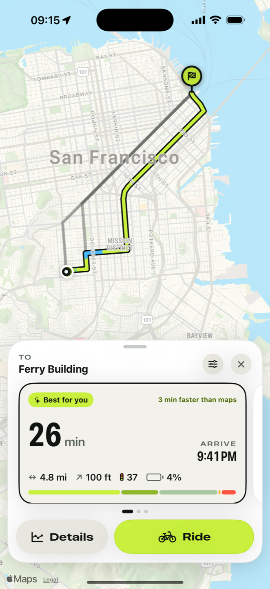

Routes that know your bike.
Map apps guess one speed for every cyclist. Pedalwise models your motor, torque, assist limit, weight and effort against every hill, traffic light and crossing, then picks the ride you actually want: more bike lanes, quieter streets, fewer stops.

Honest ride times
Real physics for climbs and descents, expected waits at traffic lights and the acceleration of your motor after every stop.
Routes your way
Weigh bike lanes, quiet streets, fewer lights, simple crossings, hills and surfaces. Re-rank any trip instantly.
A bike that lasts
Wear tracking and reminders for chain, brakes, tires and battery, plus tire pressure, saddle height and fix-it guides.
Support
How does Pedalwise estimate my ride time?
For every few dozen meters of a route, Pedalwise balances the power from your legs and motor against gravity, rolling resistance and air drag. Your motor's torque, peak power and legal assist limit, your weight and effort level, the street's surface and speed limit all count. It then adds the expected wait at each traffic light, crossings of bigger roads and turns. It's an estimate, not a promise: wind, traffic and how you feel that day still matter.
Why is it different from Google Maps or Apple Maps?
General map apps use one cycling speed for everyone and adjust it lightly for hills. That underestimates climbs on a regular bike and overestimates them on an e-bike, and usually ignores traffic lights. Pedalwise knows your bike.
Where does it work?
Routes are calculated from OpenStreetMap data, which covers cities and roads worldwide. Bike lanes, traffic lights and surfaces are as detailed as the local map; if detail is missing, Pedalwise tells you on the route.
Does Pedalwise tell me to skip red lights?
No. By default, estimates assume you wait out every red light. In places where cyclists may legally yield instead of stopping, such as Idaho-stop laws or bike right-turn-on-red signs, you can tell Pedalwise and it shortens expected waits at small, quiet crossings. Always follow local traffic laws.
How do the subscription and free trial work?
Pedalwise Pro unlocks route planning and maintenance tracking. New subscribers get a 7-day free trial; after that the plan you chose renews monthly or yearly until you cancel. Cancel any time in iPhone Settings → your name → Subscriptions at least 24 hours before the trial or period ends. Your bike profile, part guides and pressure calculator stay available without a subscription.
I subscribed but Pro isn't active.
Open My Bike → Settings → Restore while signed in to the same Apple Account you subscribed with. If it still doesn't work, email us and include the date of purchase (never your password or card details).
How accurate is the battery estimate?
Battery use comes from the motor power the model needs along the route, divided by your battery's usable capacity. Cold weather, an older battery, headwinds and frequent Turbo use reduce real range.
How do maintenance reminders know my distance?
Rides you finish in Pedalwise add their distance to your bike automatically. You can also log rides manually or type the odometer reading from your bike's display. Time-based tasks like tire pressure use the calendar.
Can I export a route to my bike computer?
Yes. Open a route's details and choose Export GPX to send it to Garmin, Wahoo, Komoot or any app that opens GPX files.
Still stuck?
Email hello@jelluna.com with your iPhone model, iOS version and what happened. We usually reply within two working days.